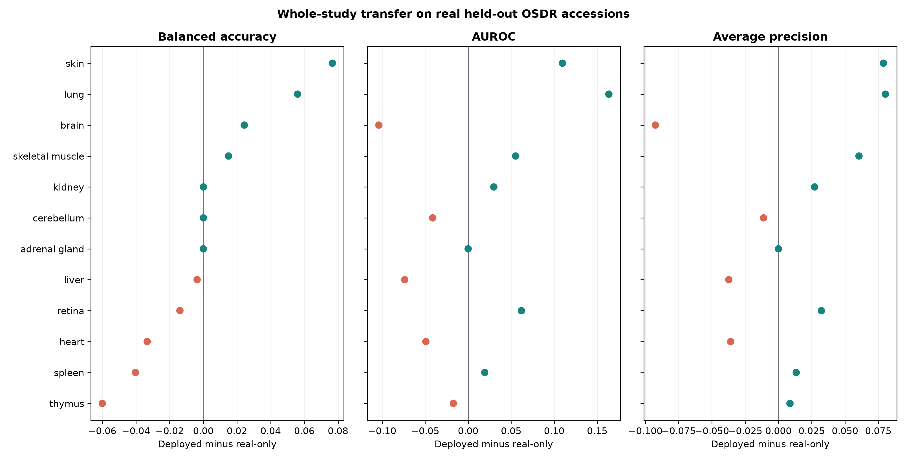
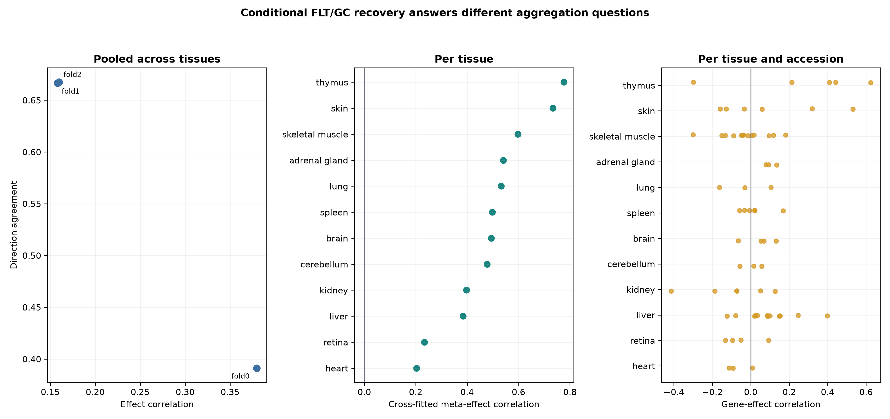

A configurable generative transcriptomics framework for spaceflown mice
Frozen analysis supplement. This document records exact data roles, architecture, evaluation gates, statistical safeguards, output locations, and rebuild commands. It does not rerun training.
The manuscript builder consumes completed outputs and fails when a required file or a key expected result is missing. It does not:
The exact frozen inputs and SHA-256 hashes are in
source_data/frozen_input_manifest.tsv. Figure hashes are in
source_data/figure_build_manifest.tsv.
OSDR data were obtained through the Biological Data API documented at
https://visualization.osdr.nasa.gov/biodata/api/. The repository implementation
and endpoint notes are in docs/osdr_api.md.
Eligibility required:
Mus musculus;No raw combined OSDR HDF5 file was used. The API audit outputs are:
outputs/generative_benchmark/data_audit/osdr/osdr_canonical_metadata.tsv
outputs/generative_benchmark/data_audit/osdr/osdr_inventory_summary.json
outputs/generative_benchmark/data_audit/osdr/osdr_tissue_alias_audit.tsv
outputs/generative_benchmark/data_audit/osdr/osdr_tissue_inventory.tsv
The API returned 1,631 profile rows. Twenty-one technical replicates were aggregated, leaving 1,610 biological profiles, 835 flight and 775 ground control, from 75 accessions and 24 canonical material classes.
The source file was assets/archs4/mouse_gene_v2.5.h5, containing 997,515
profiles and 53,511 genes. The complete audit files are:
outputs/generative_benchmark/data_audit/archs4/archs4_full_profile_audit.tsv.gz
outputs/generative_benchmark/data_audit/archs4/archs4_control_only_balanced.tsv.gz
outputs/generative_benchmark/data_audit/archs4/archs4_healthy_preferred_balanced.tsv.gz
outputs/generative_benchmark/data_audit/archs4/archs4_broad_balanced.tsv.gz
The three eligible reference cohorts contained:
| Cohort | Profiles | GEO series | Intended use |
|---|---|---|---|
| Control only | 23,614 | 3,213 | Conservative sensitivity cohort |
| Healthy preferred | 62,299 | 5,307 | Primary pretraining source |
| Broad | 134,250 | 15,111 | Diversity sensitivity cohort |
Before reference selection, nine GEO series linked to eligible OSDR accessions were excluded by accession metadata. This removed 108 otherwise eligible ARCHS4 profiles, including all 53 selected profiles from GSE152382 (OSD-457). The paper-parity run then selected 17,244 healthy-preferred profiles across 20 tissue classes. Complete GEO-series grouping assigned 10,150 profiles to training, 2,466 to validation, and 4,628 to test, with no series shared across splits.
The exclusion list and overlap audit are:
data/diffusion/osdr_archs4_overlap_exclusions.tsv
docs/diffusion_leak_free_confirmation.md
Full-transcriptome TPM was calculated with
data/reference/gencode_vM39_mouse_gene_lengths.tsv. Landmark selection occurred
after TPM calculation. The deterministic 974-gene panel and the human-to-mouse
mapping audit are:
data/diffusion/l974_mouse_paper_parity.tsv
data/diffusion/l1000_human_to_mouse_ensembl.tsv
Training-set MaxAbs scaling was applied after landmark selection. The ARCHS4 prepared matrix is:
outputs/generative_benchmark/data/lacan_diffusion/archs4_mouse_paper_parity_osdr_disjoint_l974.h5
The OSDR factorized matrix and profile metadata are:
outputs/generative_benchmark/data/lacan_diffusion/osdr_factorized_within_study_replicated_validation_l974.h5
outputs/generative_benchmark/data/lacan_diffusion/osdr_factorized_within_study_replicated_validation_l974.samples.tsv.gz
The full configuration is
configs/rna_diffusion/archs4_mouse_paper_parity_osdr_disjoint.yaml. The neural
architecture and optimizer settings match the paper-parity implementation; only
the reference exclusion and grouped split contract changed.
| Component | Value |
|---|---|
| Input genes | 974 |
| Hidden layers | 8,192; 8,192 |
| Parameters | 227,109,786 |
| Dropout | 0.1 |
| Diffusion steps | 1,000 |
| Beta schedule | Quadratic, 0.0001 to 0.02 |
| Objective | Summed noise MSE |
| Optimizer | Adam |
| Learning rate | 0.0004783833151836702 |
| Scheduler | OneCycle |
| Batch size | 2,048 |
| Epochs / optimizer steps | 15,000 / 75,000 |
| AMP | Enabled |
| EMA | 0.999 |
| Device | NVIDIA A100-SXM4-40GB |
| Runtime | 6,083 seconds |
| Peak allocated GPU memory | 5.93 GB |
Run directory:
outputs/generative_benchmark/runs/lacan_diffusion/archs4_mouse_paper_parity_osdr_disjoint_seed1234/
The accepted configuration is
configs/rna_diffusion/osdr_factorized_study_lora512_correlation_refine_osdr_disjoint.yaml.
It uses the ARCHS4 backbone described in Section S5. A base adapter was trained for 12,000 domain and 4,000 condition steps,
followed by the 4,000-domain-step and 1,000-condition-step correlation-refinement stage
reported here. The all-tissue and muscle-group development screens were then
regenerated from this adapter. Section S10 describes the separate
lung/thymus accession-held-out experiment.
| Component | Value |
|---|---|
| Backbone | Completed ARCHS4 paper-parity DDIM |
| Conditioning | Tissue, FLT/GC, accession, material type |
| Domain adapter | LoRA rank 512, alpha 512 |
| Domain stage | 4,000 steps, LR 0.00002 |
| Condition stage | 1,000 steps, LR 0.00002 |
| Batch size | 512 |
| Condition dropout | 0.15 |
| Correlation regularization | Weight 10, 256 genes, timestep <= 200 |
| Sampling | 100 DDIM steps for evaluation |
The data split contained 781 training, 536 validation, and 293 locked-test profiles. Every test accession was represented in training. Results therefore measure within-study interpolation.
The accepted calibrator used:
Run directory:
outputs/generative_benchmark/runs/lacan_diffusion/osdr_factorized_study_lora512_correlation_refine_osdr_disjoint_seed2020/
Four generation seeds, 5020-5023, were declared before the locked test was opened. Every metric was gated independently.
| Metric | Gate |
|---|---|
| Gene-correlation agreement | Paper target >= 0.98; finite-sample real-bootstrap floor also reported |
| Precision | >= 0.95 |
| Recall | >= 0.85 |
| F1 | >= 0.90 |
| Adversarial accuracy | 0.40 to 0.60 |
| FD / real-split P95 | <= 1.0 |
| Pooled effect recovery | Correlation >= 0.30 and direction >= 0.55 |
| Muscle accession recovery | Correlation >= 0.30 and direction >= 0.55 |
| Memorization | Generated fraction below train LOO P01 <= 0.05 |
The exact repeat rows are in source_data/table_s2_locked_ddim_repeats.tsv.
On the locked within-study test, mean gene-correlation agreement was
0.9744, precision 0.9974, recall 0.9957, F1 0.9966, adversarial accuracy
0.4753, and FD/real-split-P95 ratio 0.0740. All four repeats passed the
finite-sample correlation floor of 0.9497, although the mean remained below the
paper target of 0.98. Pooled FLT/GC effect recovery passed in three of four
repeats and muscle accession-effect recovery passed in all four. The preceding
validation screen missed its stricter sample-specific correlation floor and
muscle accession-effect gate; the broad biological screens therefore remain
developmental rather than study-held-out confirmation.
The term "adversarial accuracy" refers to an external nearest-neighbor real-versus-synthetic classifier, not the WGAN training critic. A result near 0.5 indicates that this external discriminator cannot reliably separate the two cohorts.
The common benchmark implementation is under src/nasa_mouse_generative/ and
the selected diffusion lineage is under src/nasa_mouse_rna_diffusion/. Three
configuration registries define the search space:
configs/generative/preprocessing_profiles.yaml
configs/generative/model_profiles.yaml
configs/generative/experiment_matrix.yaml
The resolved planner contains 463 gated experiment rows. This is a staged plan, not evidence that all 463 rows received paper-duration training. Smoke tests, paper-architecture feasibility runs, preprocessing screens, accession-scope tests, harmonization comparisons, study-conditioning experiments, and tissue expansion were advanced only when the preceding gates supported the next cost. The framework separates input units, library normalization, transformation, scaling, feature space, harmonization, training regime, accession scope, tissue mode, FLT/GC conditioning, study policy, balancing, seed, and synthetic-to-real ratio.
Nine arms used the same 974-gene conditional DDIM architecture, seed, and split: 119 training profiles, 50 validation profiles, and a 70-profile locked test that was not opened for this screen. Every arm ran on an NVIDIA A100. No arm passed all independent fidelity, pooled-condition, and accession-effect gates.
| Method | Corr. | Precision | Recall | F1 | AA | FD/real P95 | Fidelity gate | Accession gate |
|---|---|---|---|---|---|---|---|---|
| No harmonization, TPM | 0.283 | 0.200 | 0.960 | 0.331 | 0.850 | 2.052 | Fail | Fail |
| Ilangovan study z-score | 0.278 | 0.160 | 1.000 | 0.276 | 0.770 | 0.716 | Fail | Fail |
| Mentor two-stage z-score | 0.348 | 0.440 | 1.000 | 0.611 | 0.690 | 0.977 | Fail | Fail |
| ComBat | 0.004 | 0.040 | 1.000 | 0.077 | 0.810 | 63.185 | Fail | Fail |
| ComBat-seq | 0.067 | 0.020 | 1.000 | 0.039 | 0.850 | 156.647 | Fail | Fail |
| MBatch Median Polish | 0.009 | 0.020 | 1.000 | 0.039 | 0.930 | 205.470 | Fail | Fail |
| MBatch Empirical Bayes | 0.001 | 0.000 | 1.000 | 0.000 | 0.850 | 60.625 | Fail | Fail |
| MBatch ANOVA | -0.003 | 0.020 | 1.000 | 0.039 | 0.870 | 44.716 | Fail | Fail |
| MOBER | 0.808 | 0.260 | 1.000 | 0.413 | 0.770 | 33.311 | Fail | Fail |
ComBat, ComBat-seq, and the three MBatch held-out transformations used training anchors but remain transductive sensitivity analyses for an unseen study. MOBER was the inductive complex harmonizer. Its high correlation did not compensate for low precision and F1, external separability, or excessive distributional distance. Exact values and preprocessing labels are in Tables S21-S22.
The WGAN used the Viñas et al. topology: 64-dimensional noise, two 256-unit generator and critic layers, five critic updates, gradient-penalty weight 10, RMSProp learning rate 0.0005, and batch size 32. The strongest study-conditioned validation result was evaluated across six sampling seeds. Mean correlation, precision, recall, and F1 were 0.9759, 0.9764, 0.9938, and 0.9850. Mean external adversarial accuracy was 0.6362 and FD/real-P95 ratio was 0.1439. Pooled FLT/GC effect recovery passed in six of six repeats, but accession-aware skeletal-muscle recovery passed in zero of six. Because no repeat passed the full fidelity gate and accession-aware recovery was unstable, its locked test remained unopened. Exact repeat rows are in Table S23.
outputs/generative_benchmark/runs/vinas_wgan_gp/osdr_matched_study_conditioned_seed2020/
The exact-architecture GeneJEPA duration screen used 4,096 genes and 43,744 replacement-sampled training exposures. It reached 0.703 held-out tissue balanced accuracy versus 0.839 from expression. It is representation-only and has no expression decoder.
outputs/generative_benchmark/runs/genejepa/matrix_phase_0_genejepa_exact_mouse_one_epoch_f2e01cf1f130d5cb/
The full evaluation funnel had four stages: pooled utility, tissue-specific development, real-data association testing, and complete-accession transfer. The pooled utility benchmark compared real-only, generated-only, and real-plus-generated training. Tissue-specific development then compared five arms:
real_only;generated_only;real_plus_generated, equal total real and synthetic weight;guided_real_only, real classifier with real/synthetic consensus ranking;guided_low_weight, real plus recentered synthetic profiles at 0.05 total
synthetic weight.Splits were nested within accession-by-condition strata. The inner loop selected feature count, regularization, and rank method. The outer loop measured balanced accuracy, AUROC, and average precision separately. No composite score was used. Because the same accessions could contribute profiles to training and testing, this stage measured within-study development utility. It did not test transfer to a new study.
Stable genes had selection frequency at least 0.50 and coefficient-sign agreement at least 0.75. Generated-supported status did not constitute biological evidence. Real random-effects and LOO tests were applied afterward.
For the BH-FDR synthetic-informed subset, reinforced denotes a
core_intersection gene that was stable in both the real-only and selected
synthetic-guided arms, had matching coefficient directions, and had a supporting
real meta-effect. Synthetic-promoted denotes a generated_supported gene that
was stable in the selected synthetic-guided arm but did not cross the real-only
stability threshold, with a supporting real meta-effect. Thus
synthetic-promoted is a feature-selection classification, not a claim that the
gene was absent from real expression, statistically nonsignificant in real data,
or biologically novel.
Primary workflow documentation:
docs/generated_feature_guidance_workflow.md
All five arms were fitted for every analysis unit below. Values are means across eight repeated outer splits, and every outer evaluation used real profiles. An eligible arm was nonworse than real-only training in balanced accuracy, AUROC, and average precision. An eligible tie met that rule without improving a mean metric. These development results are not complete-study transfer tests.
Supplementary Table S10. Complete canonical-tissue utility screen.
| Tissue | n (FLT/GC) | Selected arm | BA real/selected | AUROC real/selected | AP real/selected | Status |
|---|---|---|---|---|---|---|
| Adrenal gland | 31 (16/15) | Generated only | 0.781 / 0.922 | 0.906 / 0.984 | 0.918 / 0.988 | Eligible improvement |
| Bone | 30 (15/15) | Guided ranking; real fit | 0.656 / 0.734 | 0.797 / 0.828 | 0.858 / 0.865 | Eligible improvement |
| Bone marrow | 20 (10/10) | Generated only | 0.969 / 1.000 | 1.000 / 1.000 | 1.000 / 1.000 | Eligible improvement |
| Brain | 45 (22/23) | Generated only | 0.688 / 0.740 | 0.712 / 0.802 | 0.731 / 0.788 | Eligible improvement |
| Brown adipose tissue | 20 (10/10) | Generated only | 1.000 / 1.000 | 1.000 / 1.000 | 1.000 / 1.000 | Eligible tie |
| Cecum | 16 (8/8) | Real only | 0.875 / 0.875 | 0.938 / 0.938 | 0.958 / 0.958 | Real-only retained |
| Cerebellum | 44 (23/21) | Generated only | 0.529 / 0.602 | 0.621 / 0.696 | 0.729 / 0.764 | Eligible improvement |
| Colon | 45 (23/22) | Real only | 0.656 / 0.656 | 0.677 / 0.677 | 0.730 / 0.730 | Real-only retained |
| Eye | 18 (9/9) | Generated only | 0.594 / 0.781 | 0.562 / 0.781 | 0.729 / 0.865 | Eligible improvement |
| Heart | 42 (21/21) | Generated only | 0.594 / 0.719 | 0.625 / 0.750 | 0.642 / 0.778 | Eligible improvement |
| Hippocampus | 30 (16/14) | Generated only | 0.698 / 0.703 | 0.740 / 0.781 | 0.849 / 0.864 | Eligible improvement |
| Kidney | 111 (56/55) | Guided ranking; 5% synthetic | 0.654 / 0.707 | 0.680 / 0.771 | 0.683 / 0.799 | Eligible improvement |
| Liver | 197 (101/96) | Real only | 0.721 / 0.721 | 0.764 / 0.764 | 0.773 / 0.773 | Real-only retained |
| Lung | 63 (32/31) | Generated only | 0.664 / 0.742 | 0.680 / 0.830 | 0.684 / 0.833 | Eligible improvement |
| Mammary gland | 20 (8/12) | Generated only | 0.771 / 0.885 | 0.854 / 0.958 | 0.875 / 0.958 | Eligible improvement |
| Optic nerve | 29 (19/10) | Guided ranking; 5% synthetic | 0.769 / 0.819 | 0.863 / 0.950 | 0.950 / 0.983 | Eligible improvement |
| Retina | 63 (37/26) | Guided ranking; 5% synthetic | 0.587 / 0.723 | 0.620 / 0.762 | 0.756 / 0.846 | Eligible improvement |
| Skeletal muscle, pooled | 149 (74/75) | Guided ranking; real fit | 0.861 / 0.932 | 0.924 / 0.961 | 0.908 / 0.945 | Eligible improvement |
| Skin | 125 (66/59) | Real + generated | 0.671 / 0.756 | 0.691 / 0.768 | 0.747 / 0.808 | Eligible improvement |
| Spleen | 86 (44/42) | Real + generated | 0.517 / 0.648 | 0.540 / 0.704 | 0.589 / 0.749 | Eligible improvement |
| Thymus | 94 (51/43) | Guided ranking; 5% synthetic | 0.733 / 0.844 | 0.818 / 0.887 | 0.862 / 0.918 | Eligible improvement |
| White adipose tissue | 20 (10/10) | Generated only | 1.000 / 1.000 | 1.000 / 1.000 | 1.000 / 1.000 | Eligible tie |
Supplementary Table S7. Complete anatomical muscle-group utility screen.
| Tissue | n (FLT/GC) | Selected arm | BA real/selected | AUROC real/selected | AP real/selected | Status |
|---|---|---|---|---|---|---|
| EDL | 24 (12/12) | Real only | 0.917 / 0.917 | 1.000 / 1.000 | 1.000 / 1.000 | Real-only retained |
| Gastrocnemius | 25 (10/15) | Guided ranking; 5% synthetic | 0.604 / 0.646 | 0.646 / 0.750 | 0.731 / 0.798 | Eligible improvement |
| Quadriceps | 35 (18/17) | Real only | 0.750 / 0.750 | 0.880 / 0.880 | 0.916 / 0.916 | Real-only retained |
| Soleus | 41 (22/19) | Real + generated | 0.925 / 0.963 | 0.980 / 0.980 | 0.980 / 0.986 | Eligible improvement |
| Tibialis anterior | 24 (12/12) | Real + generated | 1.000 / 1.000 | 1.000 / 1.000 | 1.000 / 1.000 | Eligible tie |
Sample counts are shown as total development profiles followed by flight/ground-control counts. Small cohorts and ceiling-level scores remain exploratory even when a synthetic arm is eligible.
Every canonical tissue with at least three eligible FLT/GC accessions entered a three-fold global split: adrenal gland, brain, cerebellum, heart, kidney, liver, lung, retina, skeletal muscle, skin, spleen, and thymus. An accession had one role per fold even when it contributed several tissues. Every tissue retained FLT and GC profiles in the training, validation, and test roles. Across the folds, all 68 tissue-accession pairs from 63 unique accessions and 1,284 profiles entered the test role once.
Each fold started from the 15,000-epoch OSDR-disjoint ARCHS4 checkpoint and trained a 5,000-epoch OSDR adapter on its training accessions. Conditioning was limited to tissue and FLT/GC because a truly unseen accession has no learned study embedding. Validation and test accessions were disjoint. The inner search selected feature count, regularization, real/synthetic ranking, and training weight. A generated candidate was deployed only when validation balanced accuracy improved by at least 0.02 and AUROC fell by no more than 0.01; otherwise the fold used its real-only baseline.
The accession-macro real-only results were 0.581 balanced accuracy, 0.620 AUROC, and 0.694 average precision. Deployed values were 0.583, 0.631, and 0.708. Skin, pooled skeletal muscle, and lung passed the tissue rule. Full tissue rows are in Table 6.
Effect recovery was calculated at three levels. Pooled fold-level correlation averaged 0.232 with mean direction agreement 0.575. Per-tissue random-effects correlation averaged 0.489 with direction agreement 0.682. Direct tissue-by-accession correlation averaged 0.033 with direction agreement 0.468. Tables S27-S29 contain the tissue, accession, and pooled rows. Figures S5-S6 show the predictive changes and the three effect-recovery levels.
This is a cross-fitted retrospective analysis, not a prospective test. The project had inspected related OSDR outcomes before these folds were fixed.
An initial transfer screen evaluated liver, kidney, lung, retina, skin, and thymus using complete held-out accessions. Liver and kidney gained balanced accuracy but lost AUROC; retina and skin did not improve. Lung and thymus met the advancement rule and entered the fixed follow-up.
| Tissue | Test accessions | Profiles | Real BA | Guided BA | Real AUROC | Guided AUROC | Advanced |
|---|---|---|---|---|---|---|---|
| Liver | 2 | 51 | 0.458 | 0.604 | 0.684 | 0.656 | No |
| Kidney | 2 | 30 | 0.500 | 0.528 | 0.488 | 0.475 | No |
| Lung | 1 | 39 | 0.500 | 0.555 | 0.371 | 0.497 | Yes |
| Retina | 1 | 16 | 0.619 | 0.500 | 0.762 | 0.563 | No |
| Skin | 2 | 35 | 0.447 | 0.447 | 0.484 | 0.469 | No |
| Thymus | 1 | 18 | 0.556 | 0.667 | 0.840 | 0.926 | Yes |
The confirmation protocol is frozen at:
outputs/generative_benchmark/analyses/generated_feature_guidance_confirmation_disjoint_v1/protocol.md
Test accessions:
| Tissue | Accession | Profiles | FLT | GC |
|---|---|---|---|---|
| Lung | OSD-900 | 20 | 10 | 10 |
| Thymus | OSD-457 | 24 | 12 | 12 |
Both accessions were removed from all OSDR generator-adaptation roles. A post-analysis audit found that the original ARCHS4 reference included GEO series linked to OSDR, including GSE152382 from OSD-457. Three exact OSD-457 thymus profiles had been assigned to the original ARCHS4 training split. That overlap invalidated the original fully unseen wording.
For the final analysis, all nine OSDR-linked GEO series were excluded before reference selection, the 15,000-epoch ARCHS4 backbone was trained from scratch, and the 5,000-epoch OSDR adaptation and fixed feature-guidance protocol were rerun. OSD-464 lung and OSD-244 thymus remained fixed validation studies. Because the original outcomes had already been observed before the final run, this is not a pristine prospective confirmation.
The deployed thymus classifier used real profiles only. Synthetic data changed feature ranking. The deployed lung classifier used a recentered synthetic view at 0.05 total sample weight during policy evaluation, but failed the prespecified inner gate; the deployed lung result therefore reverted to the real-only baseline.
| Tissue | Baseline BA | Guided BA | Baseline AUROC | Guided AUROC | Baseline AP | Guided AP |
|---|---|---|---|---|---|---|
| Lung, OSD-900 | 0.400 | 0.350 | 0.450 | 0.470 | 0.523 | 0.578 |
| Thymus, OSD-457 | 0.500 | 0.833 | 0.840 | 0.979 | 0.876 | 0.983 |
Genotype assignment was audited after the primary result:
| Tissue | Stratum | Profiles | FLT | GC |
|---|---|---|---|---|
| Lung | KO | 10 | 5 | 5 |
| Lung | WT | 10 | 5 | 5 |
| Thymus | Nrf2KO | 12 | 6 | 6 |
| Thymus | WT | 12 | 6 | 6 |
The uniform complete-study stage asks whether validation-gated synthetic use applies across all eligible held-out OSDR accessions. The targeted thymus study asks whether one separately specified feature panel works in OSD-457. Both are retrospective because related outcomes had already been inspected. The development stage asks which BH-significant real effects also cross repeated synthetic-informed selection thresholds within represented studies. The complete real-data screen reports random-effects BH-FDR associations regardless of feature-selection status. These stages answer different questions and are not alternative statistical filters on one gene list.
All eight study-held-out thymus genes were FLT-lower in both OSD-457 genotype strata and had FLT-lower cross-study meta-effects with BH FDR < 0.05. Their separate development-screen labels were:
| Gene | OSD-457 result | Development selection label | Cross-study BH FDR |
|---|---|---|---|
Birc5 |
FLT lower in WT and Nrf2KO | Synthetic-promoted | 1.26e-7 |
Cdk1 |
FLT lower in WT and Nrf2KO | Synthetic-promoted | 4.83e-7 |
Ccnb2 |
FLT lower in WT and Nrf2KO | Synthetic-promoted | 2.38e-4 |
Nusap1 |
FLT lower in WT and Nrf2KO | Synthetic-promoted | 1.16e-9 |
Ccnb1 |
FLT lower in WT and Nrf2KO | Not selection-stable | 3.40e-10 |
Gmnn |
FLT lower in WT and Nrf2KO | Reinforced | 0.0227 |
Ccne2 |
FLT lower in WT and Nrf2KO | Synthetic-promoted | 0.00172 |
Ube2c |
FLT lower in WT and Nrf2KO | Reinforced | 0.0102 |
This mapping is frozen in Supplementary Table S19. The transfer conclusion is that synthetic guidance assembled a coherent cell-cycle panel from real-supported genes that classified OSD-457 more effectively. The development labels describe thresholded selection behavior and should not be interpreted as eight independent novelty claims.
The all-tissue and muscle-group development screens were rerun with the same backbone. Synthetic attribution was retained only when the selected generated arm was nonworse than real-only balanced accuracy, AUROC, and average precision under the frozen selection rule. Random-effects BH-FDR values were calculated only from real OSDR profiles.
Separate frozen experiments tested whether generated profiles improved classification when complete accessions were absent from generator and classifier training. These experiments used different frozen policies and are not pooled with the fixed lung/thymus result.
| Tissue and experiment | Accessions | Profiles | Real BA | Augmented BA | Real AUROC | Augmented AUROC | Result |
|---|---|---|---|---|---|---|---|
| Heart, adaptive screen | 1 | 5 | 0.333 | 0.583 | 0.667 | 0.667 | Small exploratory gain |
| Retina, adaptive screen | 1 | 9 | 0.500 | 0.500 | 0.500 | 0.400 | Failed |
| Skeletal muscle, adaptive screen | 1 | 18 | 1.000 | 1.000 | 1.000 | 1.000 | Ceiling tie |
| Skeletal muscle, initial frozen test | 2 | 24 | 0.875 | 0.917 | 0.958 | 0.972 | Initial pass |
| Spleen, initial frozen test | 2 | 29 | 0.750 | 0.725 | 0.766 | 0.794 | Failed BA rule |
| Skeletal muscle, full extension | 11 | 159 | 0.655 | 0.658 | 0.718 | 0.690 | Did not generalize |
The expanded skeletal-muscle test exhausted all 11 eligible non-development
accessions. The paired accession bootstrap interval for the balanced-accuracy
difference was [-0.022, 0.030], while AUROC and average precision both declined.
The initial two-accession gain was therefore not treated as a generalizable
augmentation result. Exact rows for these earlier experiments are in
source_data/table_s26_prior_transfer_experiments.tsv.
For gene (g) in accession (a), the real flight effect was:
delta[g,a] = mean(real expression[g] | FLT,a)
- mean(real expression[g] | GC,a)
Accession effects were combined with a random-effects model. Within each tissue, Benjamini-Hochberg (BH) adjustment was applied to the 974 gene-level meta-analysis P values. BH sorts the P values and controls the expected proportion of false discoveries among the rejected hypotheses. The primary inclusion rule was BH FDR < 0.05; synthetic selection, study-direction agreement, heterogeneity, and LOO stability were not additional significance gates.
After BH correction, each association was annotated as:
The accession-direction fraction, random-effects variance (tau2), heterogeneity
(I2), and exact study counts remain in the complete inventory. A gene with mixed
study directions remains BH-significant when its pooled random-effects test passes,
but the disagreement qualifies interpretation of the pooled effect.
The LOO analysis removed each accession, repeated the random-effects fit, and retained the maximum FDR and any sign reversal. LOO was treated as a sensitivity label rather than an inclusion requirement. A LOO-stable gene additionally required maximum LOO FDR < 0.05 and no LOO sign reversal. Failure of this label does not remove a gene from the primary BH-FDR table.
Generated profiles were never included in the random-effects model.
The official mouse GMT is:
data/pathways/reactome_current_mouse_ensembl.gmt
It was generated from official ReactomePathways.txt and
Ensembl2Reactome_All_Levels.txt, restricted to Mus musculus, R-MMU-*
pathways, and ENSMUSG* genes.
Hypergeometric enrichment used the 974-gene landmark panel as background. Benjamini-Hochberg FDR was applied separately by tissue and selected-gene set. Reactome parent and child terms overlap. Counts of significant rows are therefore not counts of independent biological discoveries.
The factorized DDIM and three frozen synthetic development views were reused. No additional neural network was trained for the muscle-group screen.
| Group | Profiles | Accessions | FLT | GC |
|---|---|---|---|---|
| EDL | 24 | 2 | 12 | 12 |
| Gastrocnemius | 25 | 3 | 10 | 15 |
| Quadriceps | 35 | 4 | 18 | 17 |
| Soleus | 41 | 3 | 22 | 19 |
| Tibialis anterior | 24 | 2 | 12 | 12 |
The full report is docs/synthetic_skeletal_muscle_group_analysis.md. Key frozen
outputs are:
outputs/generative_benchmark/analyses/within_study_generated_feature_stability_muscle_groups_osdr_disjoint_v1/
The selected soleus arm was real plus generated expression. It improved mean
balanced accuracy from 0.9250 to 0.9625, left AUROC at 0.9800, and increased
average precision from 0.9804 to 0.9865. Five BH-FDR genes were reinforced by
both stable real-only and selected-arm feature ranking and had the same real
effect direction in all three accessions: FLT-lower Bdh1, Ech1, Bnip3,
and Decr1, and FLT-higher Tpm1. Bdh1, Ech1, Bnip3, and Tpm1 also
passed the LOO sensitivity criterion; Decr1 did not. The screen did
not promote Mef2c or Pxmp2.
Gastrocnemius selected a guided low-weight arm and promoted Fhl2 and Nfkbia.
Tibialis anterior selected real plus generated expression and reinforced
Cdkn1a, St3gal5, and Bnip3 while promoting Cebpd. None of these
gastrocnemius or tibialis genes passed the LOO FDR sensitivity rule. EDL and
quadriceps retained real-only arms, so their BH-FDR genes are not attributed to
synthetic guidance.
LOO here is a real-data meta-analysis sensitivity test. It does not remove the accession from the already completed generator adaptation. Soleus remains developmental until a new accession is excluded from adaptation and selection.
Igfbp3 follow-upThe all-tissue screen did not stably select Igfbp3
(ENSMUSG00000020427) in either the real-only or selected synthetic-guided
arm. It therefore does not demonstrate a synthetic contribution. The separate
real-data follow-up remains a secondary biological result: flight-minus-ground
effects were positive in OSD-164, OSD-246, OSD-288, OSD-420, OSD-457, and
OSD-506; random-effects FDR was 1.76e-09; and the maximum FDR across the six
leave-one-accession-out analyses was 0.00385.
A separate TPM calculation from the API-derived full-transcriptome count matrix found flight/ground-control mean ratios of 1.09 to 1.63 across the six studies. These ratios are descriptive; the accession-aware random-effects analysis is the formal statistical result.
Normal spleen source localization was performed after gene discovery:
Igfbp3 expression in
white-pulp mesenchymal cells, followed by red-pulp mesenchymal cells.These source-localization analyses are post hoc and do not constitute an
independent flight replication. The defensible hypothesis is that whole-spleen
Igfbp3 elevation reflects altered stromal expression, altered stromal abundance
or architecture, or both. It is presented as real-data context, not as a
synthetic-guided discovery. The full audit and reproduction notes are in
docs/spleen_igfbp3_handoff.md.
Supplementary Table S17 is the primary statistical inventory. It contains every real-data random-effects association with BH FDR < 0.05, without requiring synthetic selection, unanimous study direction, or LOO stability. Supplementary Table S18 reports the corresponding counts for every tested analysis unit, including tissues with zero BH-FDR genes.
The 459 retained tissue-gene results comprise 202 associations across 10 of 22 canonical tissues and 257 across all five anatomical muscle groups. This is an inventory size, not a count of independent discoveries: genes can recur across tissues, and pooled skeletal muscle overlaps the anatomical subgroup analyses. Of these results, 363 had the same effect direction in every represented accession and 96 did not. Direction agreement is reported as an annotation, not an exclusion rule.
| Analysis unit | BH-FDR genes | FLT higher | FLT lower | Unanimous direction | Synthetic-promoted | Reinforced |
|---|---|---|---|---|---|---|
| Adrenal gland | 22 | 1 | 21 | 21 | 1 | 1 |
| Eye | 8 | 4 | 4 | 8 | 0 | 1 |
| Heart | 4 | 2 | 2 | 4 | 0 | 0 |
| Kidney | 3 | 3 | 0 | 1 | 1 | 1 |
| Liver | 19 | 8 | 11 | 0 | 0 | 0 |
| Retina | 5 | 5 | 0 | 5 | 0 | 0 |
| Skeletal muscle, pooled | 26 | 12 | 14 | 5 | 4 | 8 |
| Skin | 3 | 2 | 1 | 1 | 1 | 0 |
| Spleen | 34 | 32 | 2 | 21 | 3 | 1 |
| Thymus | 78 | 37 | 41 | 57 | 13 | 3 |
| EDL | 136 | 14 | 122 | 130 | 0 | 0 |
| Gastrocnemius | 15 | 8 | 7 | 13 | 2 | 0 |
| Quadriceps | 29 | 25 | 4 | 22 | 0 | 0 |
| Soleus | 29 | 5 | 24 | 27 | 0 | 5 |
| Tibialis anterior | 48 | 42 | 6 | 48 | 1 | 3 |
Supplementary Table S16 is the 49-row synthetic-informed subset of the primary inventory: 26 synthetic-promoted and 23 reinforced tissue-gene results with supporting real effects. Synthetic attribution is suppressed when the candidate generated arm failed the three-metric eligibility gate. The table is retained to describe what the generator changed in feature ranking, but it is not the primary significance table. The full inventory additionally contains 34 real-only selected results, 370 BH-significant results not stably selected by either arm, and six synthetic-selected results without real-direction support.
The complete synthetic-informed gene set is shown below. FLT higher and FLT
lower refer to the sign of the real random-effects meta-estimate. An asterisk
marks a BH-significant pooled effect whose direction was not identical in every
accession.
Synthetic-promoted genes
| Analysis unit | FLT higher | FLT lower |
|---|---|---|
| Adrenal gland | None | Psmb8 |
| Kidney | Inpp4b* |
None |
| Skeletal muscle, pooled | None | Klhl21*, Mapkapk5*, Reep5*, Itgb5* |
| Skin | Plscr1 |
None |
| Spleen | Rai14, Myl9*, Ptprk |
None |
| Thymus | Hsd17b11*, Etv1 |
Nusap1, Stmn1, Birc5, Cdk1, Top2a, Ccnb2, Aurka, Ccne2, Kif20a, Pcna, Ccnf |
| Gastrocnemius | Nfkbia |
Fhl2 |
| Tibialis anterior | Cebpd |
None |
Reinforced genes
| Analysis unit | FLT higher | FLT lower |
|---|---|---|
| Adrenal gland | None | Tspan4 |
| Eye | None | Klhl21 |
| Kidney | Slc37a4 |
None |
| Skeletal muscle, pooled | Sox4, Cebpd*, Sh3bp5, Prkcd, Arid5b*, Sesn1*, Tle1* |
Bphl* |
| Spleen | Loxl1 |
None |
| Thymus | Snx7 |
Ube2c, Gmnn |
| Soleus | Tpm1 |
Bdh1, Ech1, Bnip3, Decr1 |
| Tibialis anterior | Cdkn1a, St3gal5, Bnip3 |
None |
Heart, liver, retina, EDL, and quadriceps had real-data BH-FDR genes but no synthetic-informed gene. Bone, bone marrow, brain, brown adipose tissue, cecum, cerebellum, colon, hippocampus, lung, mammary gland, optic nerve, and white adipose tissue had no BH-FDR gene in the 974-gene panel.
The pooled skeletal-muscle results remain auditable in Tables S17-S18 and are
interpreted separately from anatomical groups because those groups have
different responses. Liver has 19 real-data BH-FDR associations but selected a
real-only arm. Skin has three real-data BH-FDR associations and one
synthetic-promoted gene, Plscr1. Lung has no BH-FDR gene in the 974-gene
panel.
Figure S1. ARCHS4 DDIM denoising trajectory. The same generated profiles are shown at diffusion timesteps 1,000, 200, and 0 in a PCA space fitted to real ARCHS4 expression. Colors identify tissue classes. The two-dimensional view is descriptive; held-out tissue classification uses the full 974-gene representation.

Figure S2. Real and generated profiles in the locked OSDR test. Seed 5020 is shown. Tissue and condition views are descriptive; formal fidelity and effect metrics use all declared seeds and higher-dimensional data.

Figure S3. Repeated nested muscle-group balanced accuracy. Each row is a muscle group and each column is a downstream use of real or generated profiles. Arm selection also required nonworse AUROC and average precision.

Figure S4. Downstream utility of generated expression. (A) Direct pooled augmentation on the locked real test. (B) Fixed synthetic-guided policies in OSDR-held-out lung and thymus accessions. (C) Guided-minus-baseline metric changes after post-hoc genotype stratification. The targeted thymus metrics improved in both genotype strata.

Figure S5. Uniform whole-study predictive transfer. Deployed-minus-real-only changes in balanced accuracy, AUROC, and average precision for every tissue with at least three eligible accessions. Metrics are accession-macro averages on real held-out profiles. Deployment reverted to the real-only baseline when the inner validation gate did not pass.

Figure S6. FLT/GC effect recovery at three aggregation levels. Left: one real and synthetic 974-gene effect vector per outer fold after pooling tissues. Center: cross-fitted random-effects vectors calculated separately by tissue. Right: direct gene-effect correlations within each held-out tissue-accession pair. Tissue-level averaging recovers more shared structure than direct unseen-study comparison.
table_1_data_inventory.tsvtable_2_pipeline_design_space.tsvtable_4_generator_model_selection.tsvtable_6_whole_study_transfer_context.tsvtable_7_tissue_evidence.tsvtable_s1_archs4_ddim_metrics.tsvtable_s2_locked_ddim_repeats.tsvtable_s3_naive_augmentation.tsvtable_s4_confirmation_genotypes.tsvtable_s5_thymus_core_genes.tsvtable_s6_thymus_reactome.tsvtable_s7_muscle_group_summary.tsvtable_s8_soleus_genes.tsvtable_s9_muscle_reactome.tsvtable_s10_all_tissue_development_screen.tsvtable_s11_spleen_igfbp3_accession_effects.tsvtable_s12_spleen_igfbp3_random_effects.tsvtable_s13_spleen_reference_expression.tsvtable_s14_quadriceps_rbm6_accession_effects.tsvtable_s15_quadriceps_rbm6_random_effects.tsvtable_s16_ordinary_fdr_directional_genes.tsvtable_s17_all_random_effects_bh_fdr_genes.tsvtable_s18_bh_fdr_tissue_summary.tsvtable_s19_thymus_evidence_level_mapping.tsvtable_s20_tissue_utility_highlights.tsvtable_s21_liver_harmonization_benchmark.tsvtable_s22_liver_harmonization_full_metrics.tsvtable_s23_wgan_validation_repeats.tsvtable_s24_locked_ddim_metric_summary.tsvtable_s25_heldout_study_confirmation.tsvtable_s26_prior_transfer_experiments.tsvtable_s27_whole_study_tissue_effect_recovery.tsvtable_s28_whole_study_accession_effect_recovery.tsvtable_s29_whole_study_pooled_effect_recovery.tsvPYTHONPATH=src /home/exouser/miniforge3/envs/nasa-mouse/bin/python \
-m nasa_mouse_rna_diffusion.build_synthetic_guided_paper
To regenerate source tables and figures without rendering PDFs:
PYTHONPATH=src /home/exouser/miniforge3/envs/nasa-mouse/bin/python \
-m nasa_mouse_rna_diffusion.build_synthetic_guided_paper --skip-render